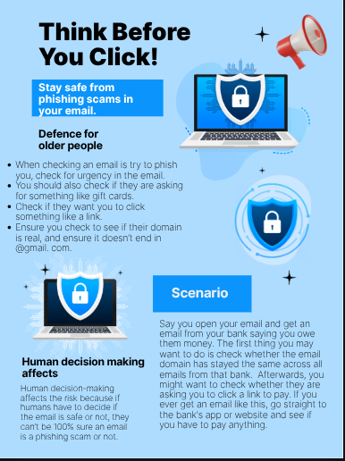

What This Artifact Is
My artifact for Cybersecurity tells people about the problem of phishing scams. They are catered towards older people, and it gives tips on how to find out if an email is a scam or not.
Screenshot or Visual

Project Link
The Internet, Cloud, Cybersecurity, or Privacy Concept Explained
Phishing scams work by impersonating trusted people or companies, and asking for things such as money, personal information, or offering something irresistible. They often use urgency to scare the reader into doing something.
The Risk or Threat Involved
One risk involved would be human error. This would be a risk because humans have to figure out if the email is a scam or a real email.
At Least Two Defenses
- The Hover Check: The Hover check works by checking if a website is real by hovering over the link to preview the website.
- The Domain Check: The Domain check works by checking the domain of a person who sends an email. If you check the domain and it is @gmail.com, then it is most likely a phishing scam.
Why Human Choices Matter
Human decisions matter because if humans think a fake email is real and try to pay the "company", the human would lose their money, and the scammers would have scammed the reader.
Which Defense Would Matter Most, and Why
The defense that matters most is the domain check because it is the most effective way to check. Without it, phishing would be much easier.